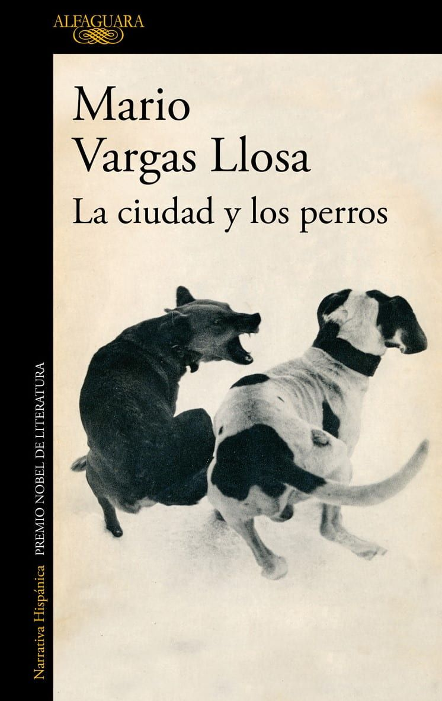

EXPERIENCIA LITERARIA INTERACTIVA
Explora los conflictos, personajes y tensiones de La ciudad y los perros. Analiza el universo narrativo y construye tu propia reinterpretación de la historia.

El Colegio Militar Leoncio Prado funciona como un espacio de violencia, jerarquía y transformación psicológica. Dentro de sus paredes, los personajes desarrollan relaciones marcadas por el miedo, la masculinidad y el poder.
Esta plataforma no busca que memorices la novela. Busca que la interpretes, la cuestiones y construyas una nueva versión desde tu propia perspectiva narrativa.